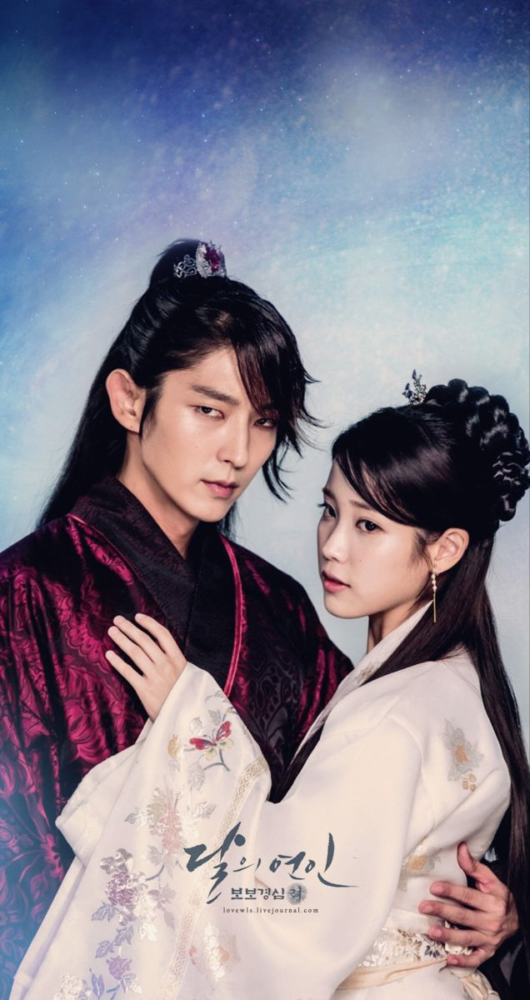
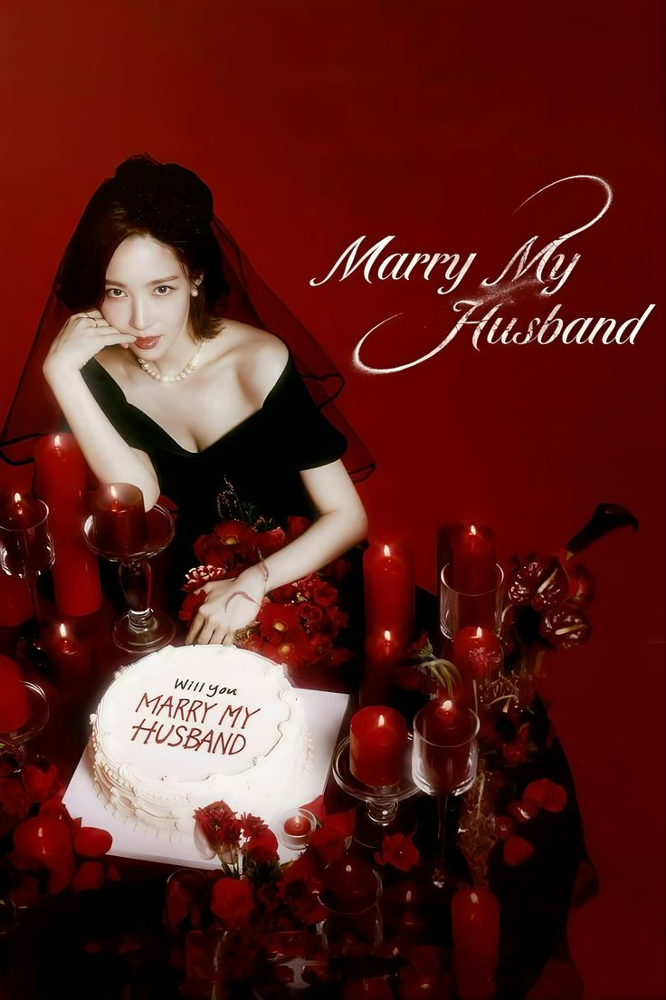

دفترچه خاطرات (The Notebook)
فیلمی درباره داستان عاشقانه نوح و آلی، دو جوان که عشق عمیقشان با موانع زندگی و زمان به چالش کشیده میشود. فیلم تصویری احساسی از تعهد، خاطرات و قدرت عشق واقعی ارائه میدهد.
سال ساخت: 2004 - کشور: آمریکا


قلبهای ارغوانی (Purple Hearts)
داستان یک خواننده با آرزوهای بزرگ و یک سرباز ارتش که به طور قراردادی ازدواج میکنند اما به مرور زمان عشق واقعی را در کنار یکدیگر مییابند. فیلم درباره فداکاری، امید و گذشت است.
سال ساخت: 2022 - کشور: آمریکا


من پیش از تو (Me Before You)
داستان دختری جوان که مراقب مردی میشود که پس از حادثهای فلج شده و به زندگی دوباره و یافتن شادی کمک میکند. فیلم نگاهی به انتخاب، عشق و معنای زندگی دارد.
سال ساخت: 2016 - کشور: انگلستان
اشتباه من
فیلمی درباره اشتباهات، پشیمانیها و چگونگی تلاش برای جبران آنها در روابط عاشقانه. قصهای احساسی درباره مسیرهای متفاوت عشق و زندگی.
سال ساخت: 2019 - کشور: ایران
وارثان (The Heirs)
داستان دانشآموزان ثروتمند و مرفه که در زندگی و عشق با چالشها روبرو میشوند، با روابط پیچیده و درسهای زندگی درباره دوستی، خانواده و عشق.
سال ساخت: 2013 - کشور: کره جنوبی
آواز مرگ (Death Song)
داستان عاشقانهای تاریخی درباره زنی خواننده که در مقابل موانع اجتماعی و سیاسی قرار میگیرد و عشق او به یک مرد در دوران سختیها شکل میگیرد.
سال ساخت: 2018 - کشور: کره جنوبی

عاشقان ماه (Moon Lovers: Scarlet Heart Ryeo)
داستان زنی که به گذشته قرون وسطی کره بازمیگردد و وارد دنیای پیچیده عاشقانه و سیاسی شاهزادهها میشود.
سال ساخت: 2016 - کشور: کره جنوبی
خانه تولدت سرنوشت توست (Doğduğun Ev Kaderindir)
داستان زنی که پس از ترک خانه کودکی به دلیل مشکلات، زندگی و عشق خود را در شهر جدید آغاز میکند و با گذشته روبرو میشود.
سال ساخت: 2019 - کشور: ترکیه

با شوهرم ازدواج کن (Marry Me Now)
سریالی درباره عشق، خانواده و چالشهای ازدواج که داستان زندگی دو زوج جوان را روایت میکند.
سال ساخت: 2018 - کشور: کره جنوبی
ملکه اشکها (Queen of Tears)
داستان عشق و انتقام میان دو خانواده قدرتمند و سرنوشت پر از پیچ و خم شخصیتها.
سال ساخت: 2023 - کشور: کره جنوبی